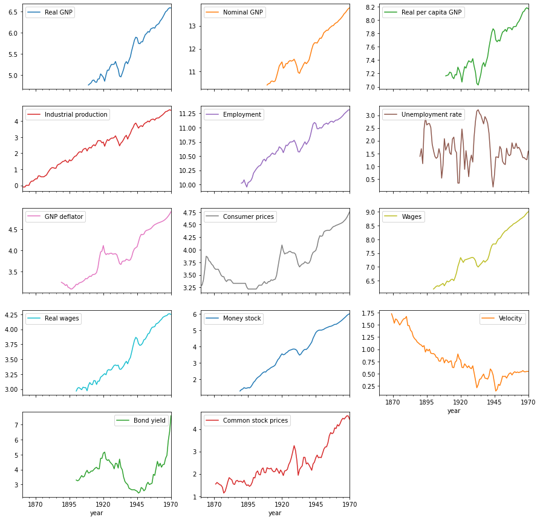
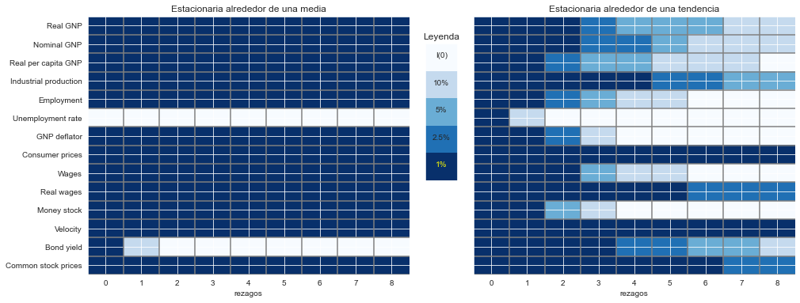

Replicando el trabajo de KPSS (1992)
Contents
4.3. Replicando el trabajo de KPSS (1992)#
El test KPSS fue propuesto en
Kwiatkowski, Phillips, Schmidt y Shin 1992 Testing the null hypothesis of stationarity against the alternative of a unit root. Journal of Econometrics 54, pp.159-178.
La idea del test es que las pruebas de Dickey-Fuller, al tener muy poca potencia para series persistentes pero sin raíz unitaria, terminan diagnosticando que muchas más series tienen raíz unitaria de las que efectivamente las tienen.
KPSS proponen una prueba en la que la hipótesis nula es que la serie es estacionaria.
Los autores estudian las mismas series que Nelson y Plosser, y llegan a resultados distintos.
import numpy as np
import pandas as pd
import matplotlib.pyplot as plt
from statsmodels.tsa.stattools import kpss
Leer los datos y visualizarlos#
Definir ubicación de archivos de datos#
GITHUB_REPO = "https://raw.githubusercontent.com/randall-romero/econometria/master/data/"
DATAPATH = GITHUB_REPO if 'google.colab' in str(get_ipython()) else '../data/'
datos = pd.read_stata(DATAPATH + 'NelsonPlosserData.dta')
datos.set_index('year',inplace=True)
variables = {'lrgnp':'Real GNP',
'lgnp':'Nominal GNP',
'lpcrgnp':'Real per capita GNP',
'lip':'Industrial production',
'lemp':'Employment',
'lun':'Unemployment rate',
'lprgnp':'GNP deflator',
'lcpi':'Consumer prices',
'lwg':'Wages',
'lrwg':'Real wages',
'lm':'Money stock',
'lvel':'Velocity',
'bnd':'Bond yield',
'lsp500':'Common stock prices'}
datos = datos[variables.keys()].rename(columns=variables)
datos.plot(subplots=True, figsize=[15,15], layout=[-1,3]);


Calculando los resultados de las pruebas#
def KPSS_una_serie(nombre_variable, tipo):
"""
Calcula los estadísticos LM de la prueba de estacionariedad KPSS, con rezagos de 0 a 8
Args:
nombre_variable: str, el nombre de una columna de la tabla "datos"
tipo: str, tipo de prueba a realizar, "c" o "ct"
Returns:
np.array, los 9 estadísticos LM estimados
"""
return [kpss(datos[nombre_variable].dropna(), regression=tipo, lags=k)[0] for k in range(9)]
KPSS_una_serie('Real GNP', 'c')
---------------------------------------------------------------------------
TypeError Traceback (most recent call last)
Input In [7], in <cell line: 1>()
----> 1 KPSS_una_serie('Real GNP', 'c')
Input In [6], in KPSS_una_serie(nombre_variable, tipo)
1 def KPSS_una_serie(nombre_variable, tipo):
2 """
3 Calcula los estadísticos LM de la prueba de estacionariedad KPSS, con rezagos de 0 a 8
4
(...)
10 np.array, los 9 estadísticos LM estimados
11 """
---> 12 return [kpss(datos[nombre_variable].dropna(), regression=tipo, lags=k)[0] for k in range(9)]
Input In [6], in <listcomp>(.0)
1 def KPSS_una_serie(nombre_variable, tipo):
2 """
3 Calcula los estadísticos LM de la prueba de estacionariedad KPSS, con rezagos de 0 a 8
4
(...)
10 np.array, los 9 estadísticos LM estimados
11 """
---> 12 return [kpss(datos[nombre_variable].dropna(), regression=tipo, lags=k)[0] for k in range(9)]
TypeError: kpss() got an unexpected keyword argument 'lags'
def KPSS(tipo):
"""
Calcula los estadísticos LM de la prueba de estacionariedad KPSS, con rezagos de 0 a 8, para
todas las series de la tabla "datos"
Args:
tipo: str, tipo de prueba a realizar, "c" o "ct"
Returns:
pd.DataFrame, series en filas, número de rezagos en columnas
"""
return pd.DataFrame([KPSS_una_serie(ser, tipo=tipo) for ser in variables.values()], index=variables.values())
%%capture
tabla5_kpss = pd.concat([KPSS('c'), KPSS('ct')], keys=['c', 'ct']).round(3)
tabla5_kpss
| 0 | 1 | 2 | 3 | 4 | 5 | 6 | 7 | 8 | ||
|---|---|---|---|---|---|---|---|---|---|---|
| c | Real GNP | 5.960 | 3.055 | 2.081 | 1.593 | 1.301 | 1.106 | 0.968 | 0.864 | 0.784 |
| Nominal GNP | 5.811 | 2.985 | 2.035 | 1.560 | 1.276 | 1.086 | 0.951 | 0.851 | 0.773 | |
| Real per capita GNP | 5.539 | 2.845 | 1.944 | 1.495 | 1.225 | 1.046 | 0.918 | 0.822 | 0.748 | |
| Industrial production | 10.786 | 5.478 | 3.698 | 2.807 | 2.273 | 1.916 | 1.661 | 1.471 | 1.322 | |
| Employment | 7.573 | 3.872 | 2.630 | 2.008 | 1.635 | 1.387 | 1.211 | 1.080 | 0.978 | |
| Unemployment rate | 0.314 | 0.179 | 0.136 | 0.114 | 0.102 | 0.095 | 0.090 | 0.087 | 0.086 | |
| GNP deflator | 7.510 | 3.822 | 2.587 | 1.968 | 1.598 | 1.351 | 1.176 | 1.045 | 0.944 | |
| Consumer prices | 7.904 | 4.027 | 2.729 | 2.080 | 1.690 | 1.430 | 1.243 | 1.103 | 0.994 | |
| Wages | 6.717 | 3.434 | 2.331 | 1.779 | 1.448 | 1.227 | 1.070 | 0.953 | 0.862 | |
| Real wages | 6.957 | 3.547 | 2.402 | 1.829 | 1.485 | 1.257 | 1.094 | 0.972 | 0.878 | |
| Money stock | 8.006 | 4.079 | 2.760 | 2.100 | 1.704 | 1.441 | 1.253 | 1.112 | 1.003 | |
| Velocity | 8.400 | 4.290 | 2.908 | 2.214 | 1.797 | 1.518 | 1.318 | 1.168 | 1.051 | |
| Bond yield | 0.780 | 0.424 | 0.300 | 0.238 | 0.200 | 0.175 | 0.157 | 0.143 | 0.133 | |
| Common stock prices | 8.014 | 4.099 | 2.789 | 2.134 | 1.741 | 1.479 | 1.292 | 1.152 | 1.043 | |
| ct | Real GNP | 0.630 | 0.337 | 0.242 | 0.198 | 0.173 | 0.158 | 0.148 | 0.141 | 0.137 |
| Nominal GNP | 0.755 | 0.392 | 0.273 | 0.215 | 0.181 | 0.159 | 0.143 | 0.132 | 0.124 | |
| Real per capita GNP | 0.528 | 0.283 | 0.204 | 0.167 | 0.147 | 0.134 | 0.126 | 0.121 | 0.118 | |
| Industrial production | 0.822 | 0.446 | 0.320 | 0.257 | 0.220 | 0.196 | 0.179 | 0.166 | 0.155 | |
| Employment | 0.526 | 0.278 | 0.198 | 0.158 | 0.136 | 0.122 | 0.112 | 0.105 | 0.101 | |
| Unemployment rate | 0.216 | 0.124 | 0.094 | 0.079 | 0.071 | 0.066 | 0.063 | 0.061 | 0.060 | |
| GNP deflator | 0.492 | 0.256 | 0.178 | 0.140 | 0.117 | 0.103 | 0.093 | 0.086 | 0.081 | |
| Consumer prices | 1.853 | 0.943 | 0.641 | 0.490 | 0.401 | 0.342 | 0.301 | 0.270 | 0.246 | |
| Wages | 0.612 | 0.316 | 0.220 | 0.173 | 0.145 | 0.128 | 0.115 | 0.107 | 0.101 | |
| Real wages | 0.956 | 0.511 | 0.365 | 0.293 | 0.252 | 0.226 | 0.208 | 0.194 | 0.184 | |
| Money stock | 0.445 | 0.228 | 0.158 | 0.124 | 0.104 | 0.092 | 0.083 | 0.078 | 0.075 | |
| Velocity | 1.776 | 0.932 | 0.647 | 0.504 | 0.418 | 0.360 | 0.319 | 0.287 | 0.262 | |
| Bond yield | 0.845 | 0.457 | 0.322 | 0.255 | 0.214 | 0.186 | 0.166 | 0.151 | 0.139 | |
| Common stock prices | 1.228 | 0.646 | 0.454 | 0.359 | 0.302 | 0.264 | 0.237 | 0.216 | 0.199 |
Añadiendo asteriscos para indicar significancia de la prueba#
critical = pd.DataFrame(
{'c': np.array([0.347, 0.463, 0.574, 0.739]),
'ct':np.array([0.119, 0.146, 0.176, 0.216])},
index=['10%', '5%', '2.5%', '1%'])
formatos = {'c':'%.2f', 'ct':'%.3f'}
critical
| c | ct | |
|---|---|---|
| 10% | 0.347 | 0.119 |
| 5% | 0.463 | 0.146 |
| 2.5% | 0.574 | 0.176 |
| 1% | 0.739 | 0.216 |
def significancia(v, tipo):
"""
Contar cuántos valores críticos KPSS fueron superados por un estimado
Args:
v: float, el estadístico LM estimado de una prueba KPSS
tipo: str, tipo de prueba realizada, "c" o "ct"
Returns:
int: 4 (signficativa al 1%), 3 (signficativa al 2.5%), 2 (signficativa al 5%),
1 (signficativa al 10%), 0 (no signficativa al 10%)
"""
return (v > critical[tipo]).sum()
def estrellas(v, tipo):
"""
Escribir coeficiente LM de prueba KPSS con estrellas de significancia:
**** (signficativa al 1%), ***_ (signficativa al 2.5%), **__ (signficativa al 5%),
*___ (signficativa al 10%), ____ (no signficativa al 10%)
Args:
v: float, el estadístico LM estimado de una prueba KPSS
tipo: str, tipo de prueba realizada, "c" o "ct"
Returns:
str, coeficiente LM con *** (variable, según significancia)
"""
ns = significancia(v, tipo)
return (formatos[tipo] % v) + '*' * ns + ' '*(4-ns)
estrellas(0.15, 'c')
'0.15 '
def KPSS_tabla(tipo):
"""
Replica la tabla 5 del artículo de KPSS, mostrando resultados de pruebas de estacionariedad
aplicadas a las series de Nelson y Plosser (1982)
Args:
tipo: str, tipo de prueba realizada, "c" o "ct"
Returns:
pd.DataFrame, series en filas, número de rezagos en columnas, pero resultados
son strings anotados con asteriscos de significancia
"""
return KPSS(tipo).applymap(lambda x: estrellas(x,tipo))
%%capture
tabla5_kpss_star = pd.concat([KPSS_tabla('c'), KPSS_tabla('ct')], keys=['c', 'ct']).round(3)
tabla5_kpss_star
| 0 | 1 | 2 | 3 | 4 | 5 | 6 | 7 | 8 | ||
|---|---|---|---|---|---|---|---|---|---|---|
| c | Real GNP | 5.96**** | 3.06**** | 2.08**** | 1.59**** | 1.30**** | 1.11**** | 0.97**** | 0.86**** | 0.78**** |
| Nominal GNP | 5.81**** | 2.99**** | 2.04**** | 1.56**** | 1.28**** | 1.09**** | 0.95**** | 0.85**** | 0.77**** | |
| Real per capita GNP | 5.54**** | 2.84**** | 1.94**** | 1.49**** | 1.23**** | 1.05**** | 0.92**** | 0.82**** | 0.75**** | |
| Industrial production | 10.79**** | 5.48**** | 3.70**** | 2.81**** | 2.27**** | 1.92**** | 1.66**** | 1.47**** | 1.32**** | |
| Employment | 7.57**** | 3.87**** | 2.63**** | 2.01**** | 1.64**** | 1.39**** | 1.21**** | 1.08**** | 0.98**** | |
| Unemployment rate | 0.31 | 0.18 | 0.14 | 0.11 | 0.10 | 0.09 | 0.09 | 0.09 | 0.09 | |
| GNP deflator | 7.51**** | 3.82**** | 2.59**** | 1.97**** | 1.60**** | 1.35**** | 1.18**** | 1.04**** | 0.94**** | |
| Consumer prices | 7.90**** | 4.03**** | 2.73**** | 2.08**** | 1.69**** | 1.43**** | 1.24**** | 1.10**** | 0.99**** | |
| Wages | 6.72**** | 3.43**** | 2.33**** | 1.78**** | 1.45**** | 1.23**** | 1.07**** | 0.95**** | 0.86**** | |
| Real wages | 6.96**** | 3.55**** | 2.40**** | 1.83**** | 1.49**** | 1.26**** | 1.09**** | 0.97**** | 0.88**** | |
| Money stock | 8.01**** | 4.08**** | 2.76**** | 2.10**** | 1.70**** | 1.44**** | 1.25**** | 1.11**** | 1.00**** | |
| Velocity | 8.40**** | 4.29**** | 2.91**** | 2.21**** | 1.80**** | 1.52**** | 1.32**** | 1.17**** | 1.05**** | |
| Bond yield | 0.78**** | 0.42* | 0.30 | 0.24 | 0.20 | 0.18 | 0.16 | 0.14 | 0.13 | |
| Common stock prices | 8.01**** | 4.10**** | 2.79**** | 2.13**** | 1.74**** | 1.48**** | 1.29**** | 1.15**** | 1.04**** | |
| ct | Real GNP | 0.630**** | 0.337**** | 0.242**** | 0.198*** | 0.173** | 0.158** | 0.148** | 0.141* | 0.137* |
| Nominal GNP | 0.755**** | 0.392**** | 0.273**** | 0.215*** | 0.181*** | 0.159** | 0.143* | 0.132* | 0.124* | |
| Real per capita GNP | 0.528**** | 0.283**** | 0.204*** | 0.167** | 0.147** | 0.134* | 0.126* | 0.121* | 0.118 | |
| Industrial production | 0.822**** | 0.446**** | 0.320**** | 0.257**** | 0.220**** | 0.196*** | 0.179*** | 0.166** | 0.155** | |
| Employment | 0.526**** | 0.278**** | 0.198*** | 0.158** | 0.136* | 0.122* | 0.112 | 0.105 | 0.101 | |
| Unemployment rate | 0.216**** | 0.124* | 0.094 | 0.079 | 0.071 | 0.066 | 0.063 | 0.061 | 0.060 | |
| GNP deflator | 0.492**** | 0.256**** | 0.178*** | 0.140* | 0.117 | 0.103 | 0.093 | 0.086 | 0.081 | |
| Consumer prices | 1.853**** | 0.943**** | 0.641**** | 0.490**** | 0.401**** | 0.342**** | 0.301**** | 0.270**** | 0.246**** | |
| Wages | 0.612**** | 0.316**** | 0.220**** | 0.173** | 0.145* | 0.128* | 0.115 | 0.107 | 0.101 | |
| Real wages | 0.956**** | 0.511**** | 0.365**** | 0.293**** | 0.252**** | 0.226**** | 0.208*** | 0.194*** | 0.184*** | |
| Money stock | 0.445**** | 0.228**** | 0.158** | 0.124* | 0.104 | 0.092 | 0.083 | 0.078 | 0.075 | |
| Velocity | 1.776**** | 0.932**** | 0.647**** | 0.504**** | 0.418**** | 0.360**** | 0.319**** | 0.287**** | 0.262**** | |
| Bond yield | 0.845**** | 0.457**** | 0.322**** | 0.255**** | 0.214*** | 0.186*** | 0.166** | 0.151** | 0.139* | |
| Common stock prices | 1.228**** | 0.646**** | 0.454**** | 0.359**** | 0.302**** | 0.264**** | 0.237**** | 0.216*** | 0.199*** |
Visualizando los resultados con un mapa de calor#
def KPSS_heatmap(tipo, ax):
"""
Crea un mapa de calor (heatmap) para visualizar los resultados de la tabla 5 de KPSS
Args:
tipo: str, tipo de prueba realizada, "c" o "ct"
ax: axis de matplotlib.pyplot, eje cartesiano donde se grafican los resultados
Returns:
una imagen. La figura queda dibujada en el parámetro ax
"""
tabla = KPSS(tipo).applymap(lambda x: significancia(x, tipo))
return ax.imshow(tabla, cmap='Blues', aspect='auto')
def KPSS_heatmap(tipo, ax):
tabla = KPSS(tipo).applymap(lambda x: significancia(x, tipo))
return ax.imshow(tabla, cmap='Blues', aspect='auto')
%%capture
fig, axs = plt.subplots(1,2, figsize=[16,6], sharey=True)
im0 = KPSS_heatmap('c', axs[0]) #axs[0].imshow(tabla_kpss_c, cmap='Blues', aspect='auto')
im1 = KPSS_heatmap('ct', axs[1]) #axs[1].imshow(tabla_kpss_ct,cmap='Blues', aspect='auto')
axs[0].set(
title='Estacionaria alrededor de una media',
xlabel='rezagos',
yticks=np.arange(len(variables)),
yticklabels=[''] * len(variables));
axs[1].set(
title='Estacionaria alrededor de una tendencia',
xlabel='rezagos',
yticks=np.arange(len(variables)),
yticklabels=variables.values());
for ax in axs:
ax.vlines(0.5 + np.arange(8), -0.5,13.5,'gray')
ax.hlines(0.5 + np.arange(14), -0.5,8.5,'gray')
axlegend = fig.add_axes([0.495,0.4, 0.035,0.4])
axlegend.imshow(np.arange(5).reshape(5,1), cmap='Blues', aspect='auto')
axlegend.set(xticks=[], yticks=[], title='Leyenda')
for k, v in enumerate(critical.index[:-1]):
axlegend.annotate(v, [0, 1+k],ha='center')
axlegend.annotate(critical.index[-1], [0, k+2],color='yellow',ha='center')
axlegend.annotate('I(0)', [0, 0],ha='center')
fig.savefig('NelsonPlosser-KPSS.pdf', bbox_inches='tight')
fig
